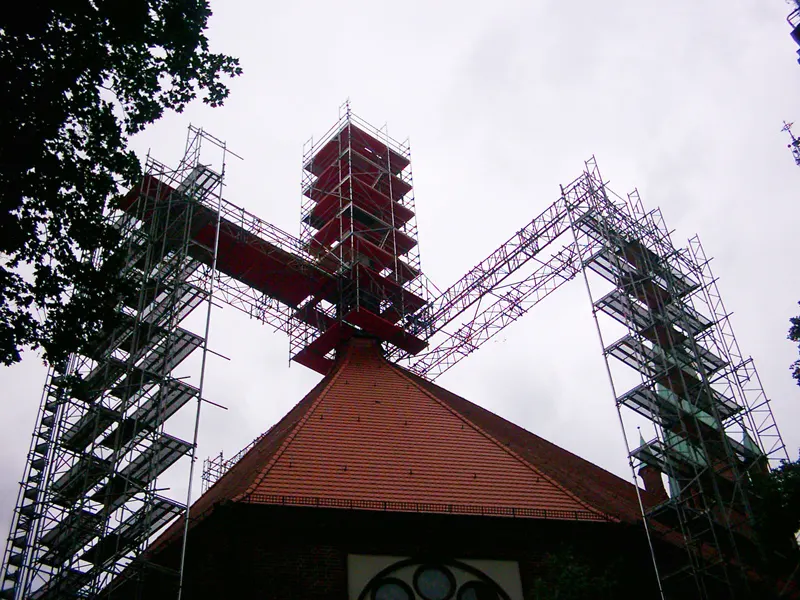
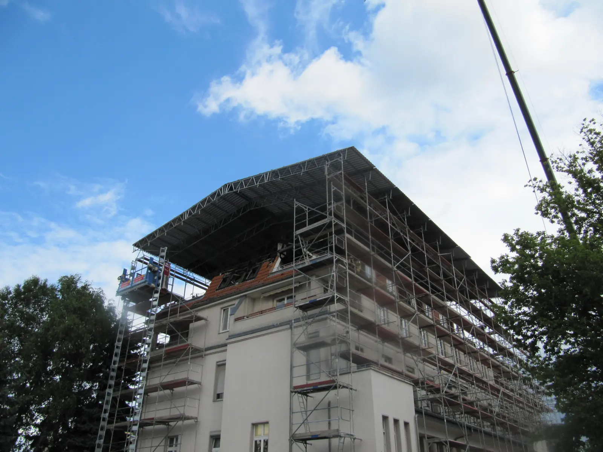
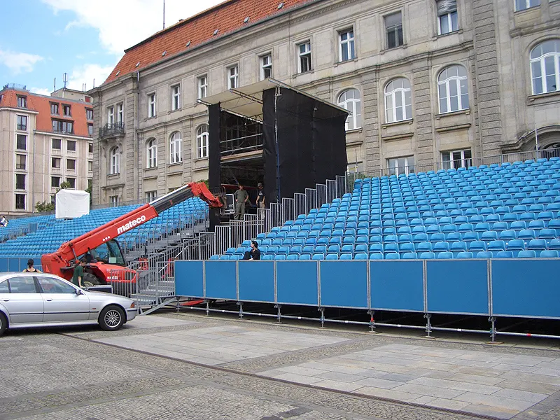
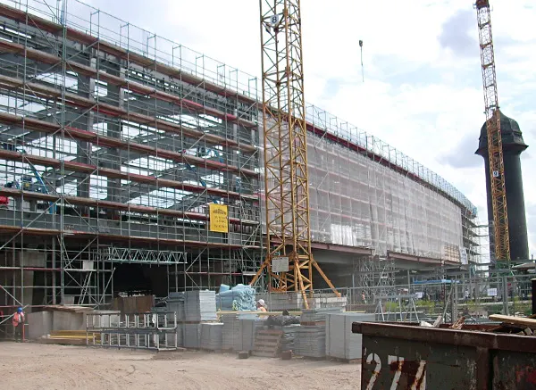
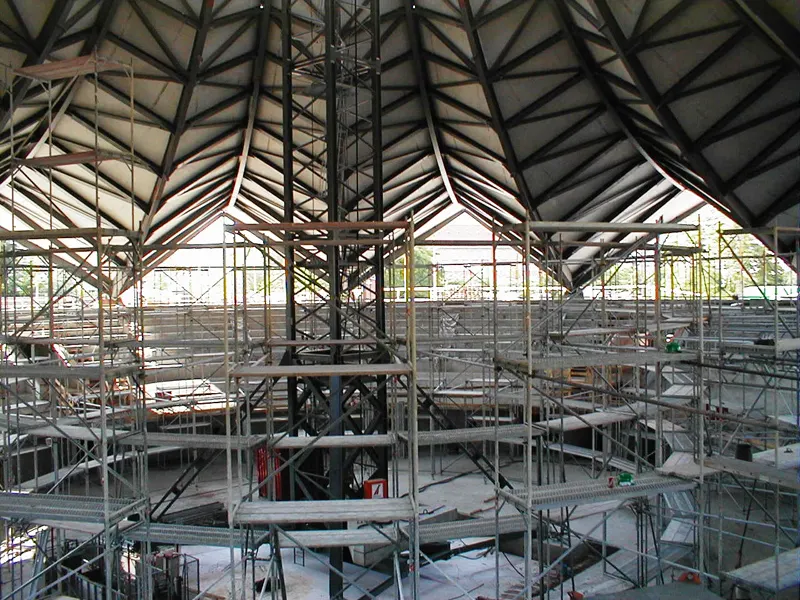
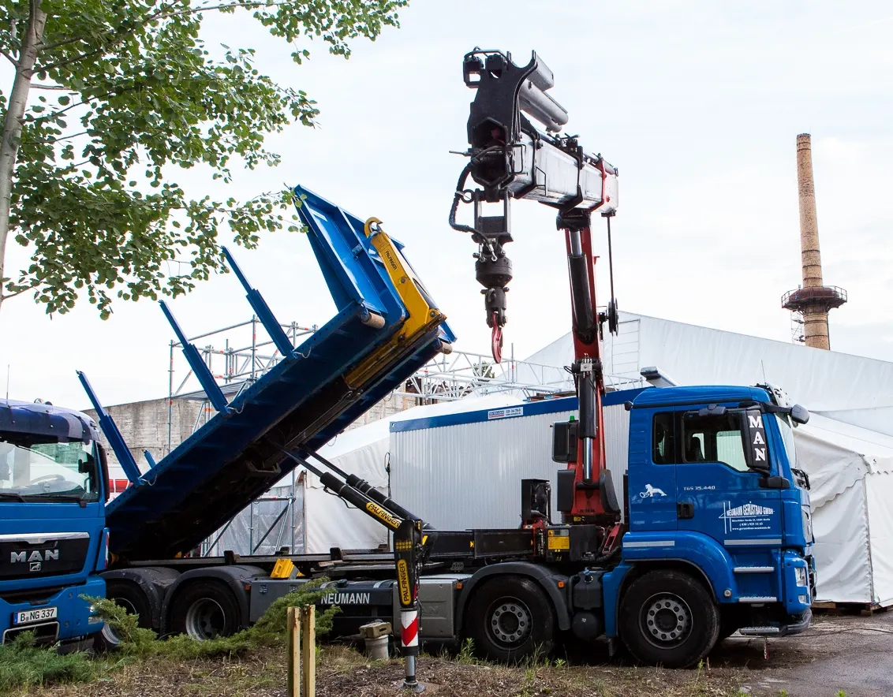
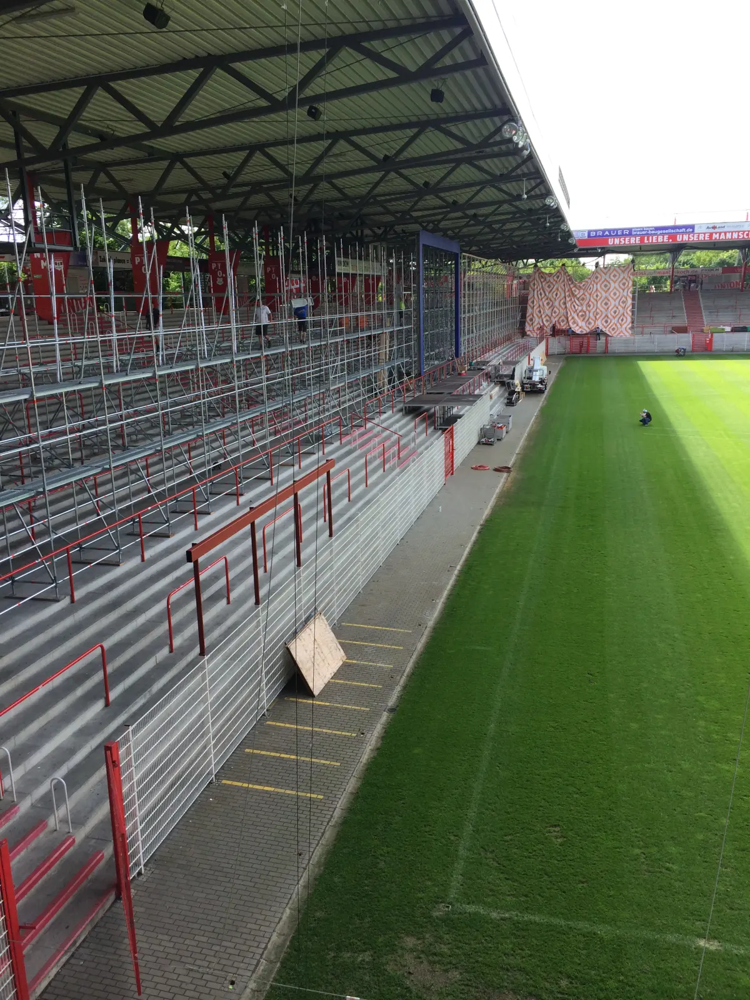

Gerüstbau in Berlin · seit 1990
Wir rüsten
Berlin ein.
Vom Altbau in Prenzlauer Berg bis zum Olympiastadion. Scrollen Sie und sehen Sie zu, wie ein Gerüst entsteht.
Gerüstbau in Berlin · seit 1990
Vom Altbau in Prenzlauer Berg bis zum Olympiastadion. Scrollen Sie und sehen Sie zu, wie ein Gerüst entsteht.
01 Planung
Wir kommen zur Baustelle, nehmen Maß und beraten Sie kostenfrei. Danach wissen Sie genau, welches Gerüst Ihr Vorhaben braucht und wann es steht.
02 Aufbau
Unsere Kolonnen bauen Rahmen- und Rohrkupplungsgerüste mit eigenem Material und eigenem Fuhrpark. Verankert, abgenommen, freigegeben.
03 Standzeit
Maler, Stuckateure und Dachdecker arbeiten sicher auf jeder Ebene. Bei Bedarf mit Wetterschutzdach, Bauaufzug, Verkleidung oder Werbebanner.
04 Abbau
Ist die Fassade fertig, bauen wir zügig zurück und transportieren alles ab. Der Gehweg ist wieder frei, die Straße auch.
Was bleibt, ist die Fassade.
Leistungen
Von der Fassade bis zur Sonderkonstruktion. Sie bekommen Beratung, Planung und Umsetzung von einem Ansprechpartner.

Arbeits- und Schutzgerüste für Fassade, Dach und Innenraum. Systemgerüst für die Fläche, Rohr und Kupplung für alles, was nicht gerade ist.

Ein Dach über der Baustelle. Ihr Dachstuhl bleibt trocken und Ihr Zeitplan hängt nicht mehr am Wetterbericht.

Tribünen, Podeste und Bühnen für Messen und Open Airs. Dazu Planen, Netze und Werbeflächen am Gerüst.

Material und Menschen kommen sicher nach oben. Wir stellen auf, weisen ein und holen wieder ab.

Hängegerüste, Überbrückungen, Treppentürme. Wenn der Katalog endet, planen wir die Lösung für genau Ihr Objekt.

Eigene LKW mit Ladekran und Abrollsystem. Wir bringen und holen Container, Material und Bauteile.
Referenzen
Eine Auswahl aus über drei Jahrzehnten. Vom Wohnhaus im Kiez bis zum Wahrzeichen.

Großprojekte
Wir übernehmen kurzfristige Aufträge genauso wie die Planung und Vorbereitung großer Bauvorhaben.
Über uns
Die Neumann Gerüstbau GmbH ist Ihr Partner für Gerüste in Berlin. Unser Büro und Lagerplatz liegen in Marzahn, unsere Baustellen in der ganzen Stadt und im Umland.
Seit 1990 bilden wir aus und sind Mitglied im Bundesverband Gerüstbau. Feste Ansprechpartner begleiten Sie von der Planung bis zum letzten Bauteil, das wieder auf den LKW geht. Termintreue und Zuverlässigkeit sind bei uns keine Werbung, sondern Tagesgeschäft.


Karriere
Wir suchen Leute, die anpacken können und schwindelfrei sind. Bewerbung per E-Mail oder Post, Fragen gern vorab.
Für unsere Werkstatt. Schwerpunkt ist die Reparatur von Gerüstmaterial, Schweißkenntnisse setzen wir voraus.
Jetzt bewerbenFür unsere Kolonnen auf Baustellen in Berlin und Brandenburg. Mit Erfahrung oder als Quereinsteiger mit Biss.
Jetzt bewerbenFür unseren Fuhrpark mit Kran- und Container-LKW. Sie bringen das Material dorthin, wo es gebraucht wird.
Jetzt bewerbenWir bilden seit 1990 aus. Wer bei uns lernt, steht früh auf echten Baustellen und nicht nur daneben.
Platz anfragenKontakt
Die Beratung ist kostenfrei. Am schnellsten geht es per Telefon.